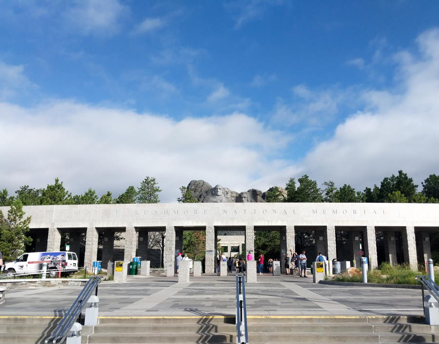

Leaving The Resort
Today was going to be a slow start, the KOA Resort we stayed at had a breakfast tent that opened at 7am. We figured it would be nice for the girls to have a slow start and enjoy breakfast. We went down to "Prospectors tent", and had some pankcakes, eggs, and coffee.
The morning campAfter breakfast we went up the hill towards Mount Rushmore. The KOA was only a few miles away so it was a short drive. The parking area was a 5 floor parking garage, the Jeep almost didn't fit into the parking garage. We missed the ceiling by an inch or two. Boy would that of been interesting.
Mount Rushmore was partially closed due to renovations, but we still visited the gift store to buy some patches and magnets. We usually buy a fridge magnetic whenever we visit a new state. We have also started collecting patches for each State\National park we visit. The plan is to put a headliner in the Jeep and attach them to the inside of the roof.
 Mount Rushmore aww, sometimes they do love each other Wish we could of gotten closer!Heading to the Badlands
We started out heading towards the badlands, we passed a Dinosaur museum on the way and had to make several u-turns to stop and go in. I kept missing the exit, and at one point had to drive through a ditch type thing. I didn't notice how deep it was, I think the cargo shelf bottomed out there again. Oops!
In the backseat, Jenna is screaming like a banshee because she keeps seeing the Dinosaur sign go by. I don't know if she thinks I'm just being mean and driving back and forth on purpose? Eventually I got into the right parking lot. I may of driven in through an Exit though.
Inside they had life-sized replicas of dinosaurs, an actual fossil, and a mirror maze. We looked around at all the dinos, and went through the Maze a few times. Jenna thought it was the funniest thing when she tried to find me, but I was around several corners. We all got a good laugh when she walked smack into a mirror trying to hug me.
Dinos! Dinos! Poor quality, I'm not the photographer that Abigail isWall Drug
It wouldn't be a trip to the midwest if we didn't stop at Wall Drug. Boy is that an interesting town, and it was packed full of tourists. We took some pictures, walked around the various stores. Both girls were amazed by the geodes and other rocks for sale. One of those geodes was 300$! I may of nervously shooed them away when they tried picking it up..
We had lunch in their Prarie Cafe, A slice of pizza for the girls shared and a Strawberry smoothie. It hit the spot. The girls tried on some cowboy boots, and Jenna tried her hand at a racing game.
The famous Jackalope Jenna's Cowboy hat she tried on Thea Really wanted these Jenna loved the racing game The whole family...Everyone was a bit tiredFinding Camp
On the way to Camp, we came across the Prarie Dog Ranch store, where you could buy bags of Peanuts and feed the Prarie dogs. We didn't buy anything, but we were still able to walk out and see Prarie dogs from a foot away.
Prarie Dog Up Close and Personal! Prarie Dog!After Wall Drug we decided to find our campsite before exploring the badlands. We ended up at the White-River KOA camp. We paid for a spot with electricity but they gave us spot that only had a 30 amp outlet. Soo we had to drive back to the Officeand ask to get a spot with a 20amp outlet.
This time when we checked it out the family camping next to us was plugged into the only 20 amp outlet. There was a 30 amp outlet available, but nothing in the Jeep could use that. So we drove back to the office again. Side note: The speed was 5mph, with speed bumps. It wasn't far, but it was annoying and the girls were very cranky. They didn't like driving past the pool over and over again.Abigail ran in to tell the manager that the non-power campsite had plugged into our spot and they had someone drive down to see what was going on. By this time we had decided we would go off and explore the badlands, and see what awaited us when we returned. (We had power when we returned, yay!)
Our camp for the nightExploring the Badlands
After we dealt with camp, we made our way into the Badlands. Driving around for a hour or two, we didn't even finish the whole loop. We got out and tried walking a few trails, and found they were a bit too difficult for the girls. We still explored some of the clay mounds.
The badlands from an overlook! The Badlands!In one of the spots we stopped for pictures, we heard a rattle sound coming from the bushes. Luckily Abigail was up high out of the way, so we quickly got into the Jeep.
The Badlands!Fun fact about the badlands, when one of your kids has to go Pee the clay ground very quickly absorbs the liquid. Jenna decided she had go pee as we were walking up one of the trails. She also refused to head back to the Jeep so we could head to the visitor center down the road and use a bathroom. Luckily there was nobody around and we were able to crouch down behind some tall grass (no rattle snakes).
The Badlands! The Badlands!We stopped to do a Fossil boardwalk, which supposidly was in an area that Fossils are known to be found. If someone discovers a fossil, there is a form you can fill out so professionals can come out and look at it.
It was very hot, and there was a Bee that would not leave us alone. First it was bothering Thea and Abigail, and then soon it came after me when I tried to shoo the bee away. Thea and I escape back to the Jeep to apply lots of bug spray, and then came back to explore more with Jenna and Abigail.
A fossil boardwalk we did Happy Family!Back to Camp
By this time it was hot and late in the day. We were all...Cranky. That's a nice word to describe us. Everyone was yelling at each other, demading to go home. Our first campsite here was in the shade, and we passed it up for one without shade. Man, we were all unhappy. I almost wanted to call the trip short!
When we finally got unpacked Abigail made some Camp Tacos (My favorite). Soon after we ate, we all went over to the pool to take a much needed dip. I thought the water was excelent, it was very warm (from the sun), but I think the girls wanted it to be a bit colder.
Yummy Camp Tacos! Fun times in the pool!Of course we had to visit the playground at the KOA, Jenna got to try her hand at lassoing a Bull!
This didn't end wellAfter the playground we went into the camp store and each got an ice-cream. Thea did not want to leave the playground, but once Jenna knew there was ice-cream available, she made sure Thea went to where she needed to be.
Jenna, gently guiding Thea to the storeThey melted pretty quicly but both girls ate theirs as fast as possible.
Thea was eyeballing Jenna's!Abigail and I saved ours for after we all got ready for bed. Hoping we could enjoy it ourselves, but once the little monsters saw we had ice-cream...We had to share. They probably would of thrown us out of the tent if we didn't give them bites.
Watching cartoons on the tablet before bedFinally it was time to go to bed, the noise we heard in Missouri came back. My guess is it was some kind of bug, because the outdoor sink by the bathroom was full of dead beetles. Hopefully tomorrow we would be at the Farm, and be able to enjoy a few nights rest.